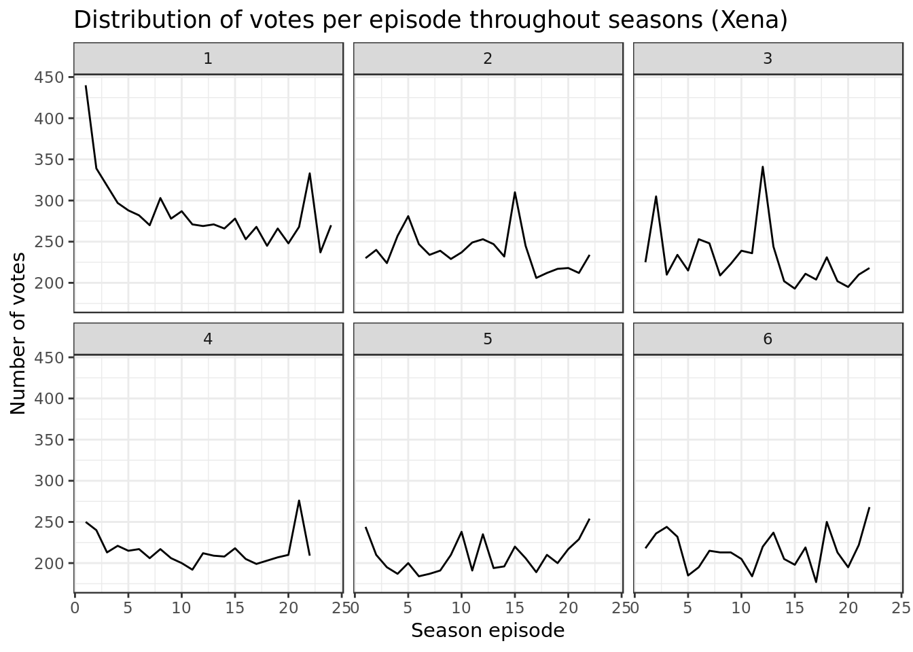
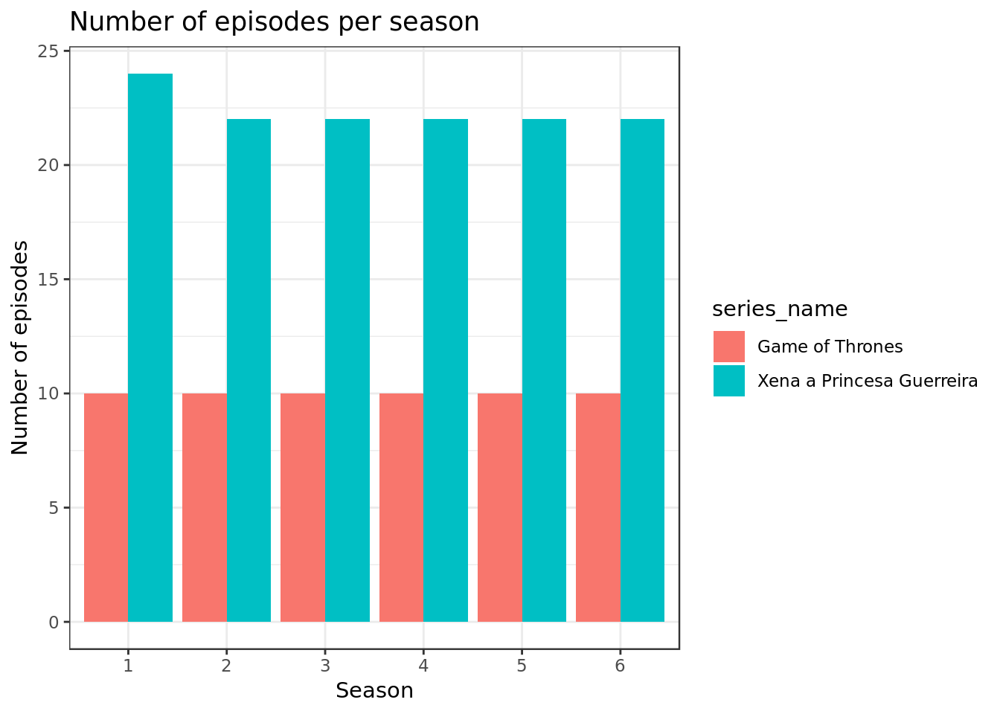
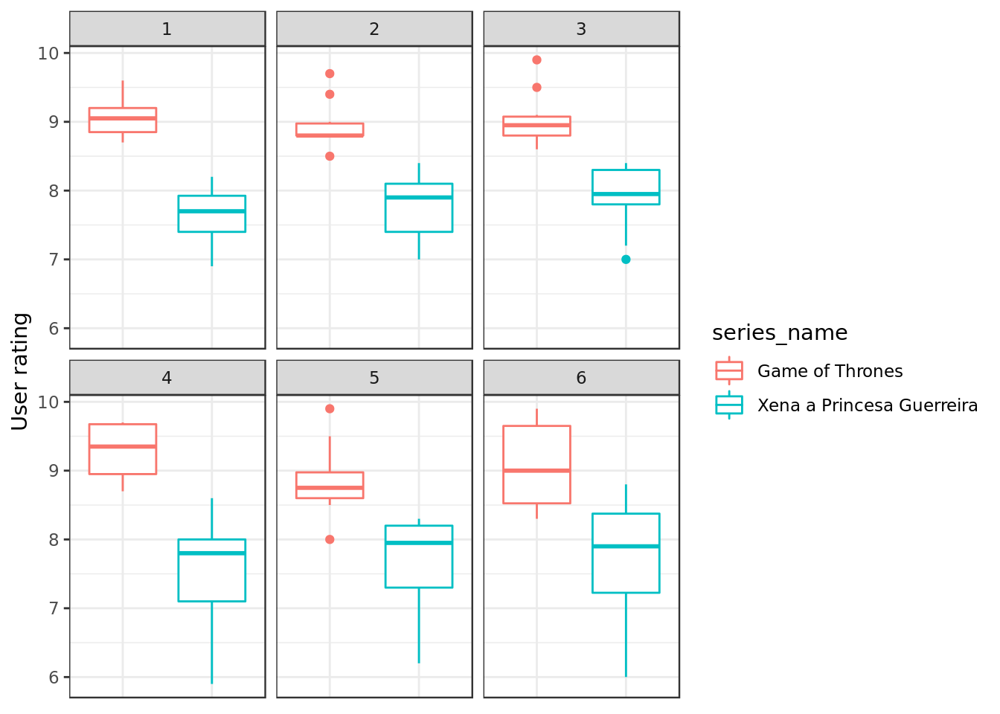
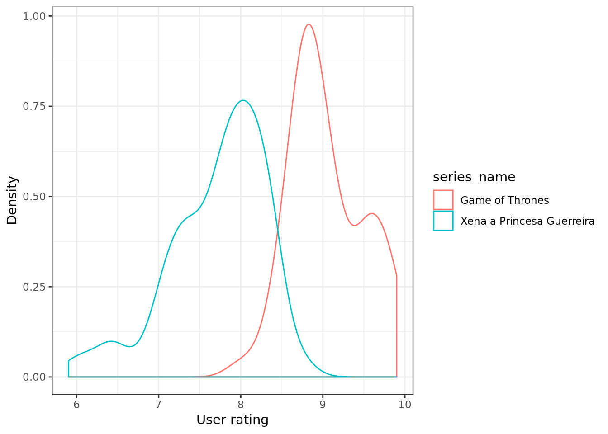
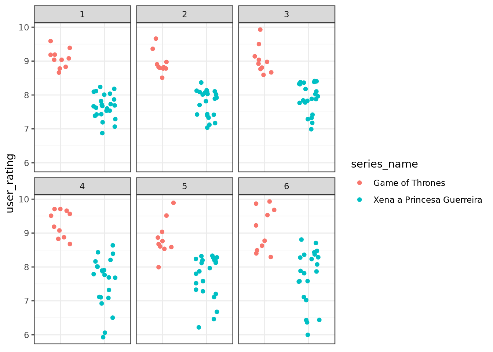
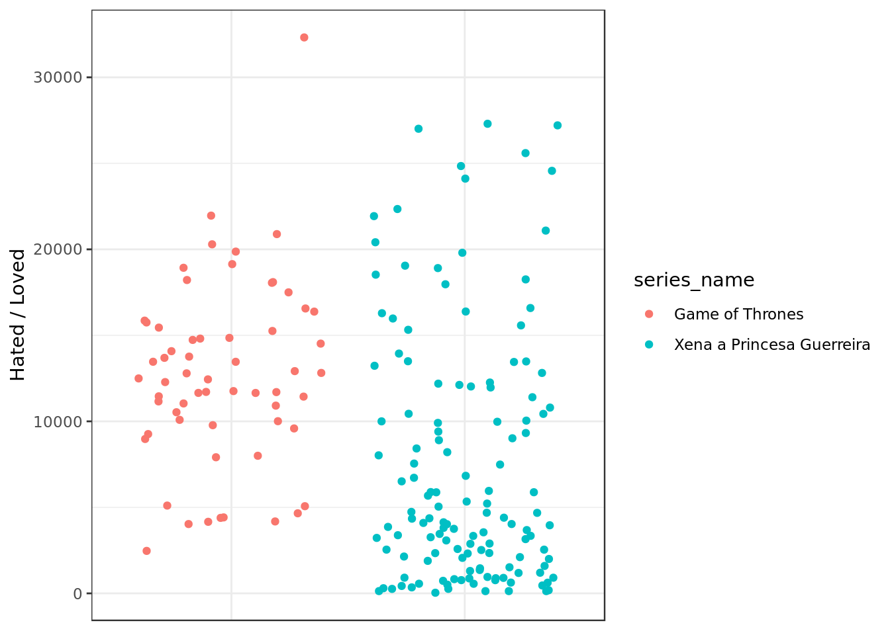

EDA Game of Thrones (GOT) and Xena the Warrior Princess
Análise exploratória de dados do IMDB sobre as séries Game of Thrones e Xena The Warrior Princess.
Table of Contents
Conjunto de dados utilizado
Os dados originais e as variáveis vêm deste repositorio . Lá consta a explicação de como os dados foram gerados e do significado de cada variável.
Conjunto de dados de análise
Diante do conjunto de dados coletados, analisaremos as avaliações do IMDB das seguintes séries:
- Game of Thrones
- Xena The Warrior Princess
Panorama dos dados
episodes = read_csv(here("/data/series_from_imdb.csv"),
progress = FALSE,
col_types = cols(.default = col_double(),
series_name = col_character(),
episode = col_character(),
url = col_character(),
season = col_character())) %>%
filter(series_name %in% c("Game of Thrones","Xena a Princesa Guerreira"))
episodes %>%
glimpse()## Observations: 194
## Variables: 18
## $ series_name <chr> "Xena a Princesa Guerreira", "Xena a Princesa Guer...
## $ episode <chr> "Sins of the Past", "Chariots of War", "Dreamworke...
## $ series_ep <dbl> 1, 2, 3, 4, 5, 6, 7, 8, 9, 10, 11, 12, 13, 14, 15,...
## $ season <chr> "1", "1", "1", "1", "1", "1", "1", "1", "1", "1", ...
## $ season_ep <dbl> 1, 2, 3, 4, 5, 6, 7, 8, 9, 10, 11, 12, 13, 14, 15,...
## $ url <chr> "http://www.imdb.com/title/tt0394990/", "http://ww...
## $ user_rating <dbl> 7.9, 7.4, 7.7, 7.4, 7.5, 7.7, 7.5, 8.0, 7.8, 7.6, ...
## $ user_votes <dbl> 440, 339, 318, 297, 288, 282, 270, 303, 278, 287, ...
## $ r1 <dbl> 0.003623188, 0.025641026, 0.064516129, 0.023474178...
## $ r2 <dbl> 0.04347826, 0.03846154, 0.03548387, 0.02347418, 0....
## $ r3 <dbl> 0.010869565, 0.038461538, 0.029032258, 0.004694836...
## $ r4 <dbl> 0.007246377, 0.034188034, 0.022580645, 0.023474178...
## $ r5 <dbl> 0.018115942, 0.042735043, 0.019354839, 0.046948357...
## $ r6 <dbl> 0.02536232, 0.12393162, 0.03870968, 0.06103286, 0....
## $ r7 <dbl> 0.08695652, 0.16239316, 0.05161290, 0.11267606, 0....
## $ r8 <dbl> 0.1086957, 0.1666667, 0.1354839, 0.2112676, 0.1804...
## $ r9 <dbl> 0.15579710, 0.09829060, 0.17096774, 0.18309859, 0....
## $ r10 <dbl> 0.5398551, 0.2692308, 0.4322581, 0.3098592, 0.3383...Em geral quantos votos um episódio tem em uma temporada da série?
episodes %>%
filter(series_name %in% c("Xena a Princesa Guerreira")) %>%
ggplot(aes(x = season_ep, y = user_votes)) +
geom_line() +
facet_wrap(~ season) +
ggtitle("Distribuição de votação por episódios a cada temporada (Xena)")
A série Xena teve em geral centenas de votos para os episódios da série ao longo de suas seis temporadas.
episodes %>%
filter(series_name %in% c("Game of Thrones")) %>%
filter(season != 6) %>%
ggplot(aes(x = season_ep, y = user_votes)) +
geom_line() +
facet_wrap(~ season) +
ggtitle("Distribuição de votação por episódios a cada temporada (GOT)")A série GOT teve dezenas de milhares de votos para seus episódios ao longo de suas cinco primeiras temporadas.
Além disso, tem alguns poucos episódios com muito mais avaliações do que outros.
episodes %>%
filter(series_name %in% c("Game of Thrones")) %>%
filter(season == 6) %>%
ggplot(aes(x = season_ep, y = user_votes)) +
geom_line() +
facet_wrap(~ season) +
ggtitle("Distribuição de votação por episódios a cada temporada (GOT)")
Na sua sexta temporada GOT teve um aumento considerável de votos, chegando à escala de centena de milhares de votos.
Quantos episódios cada série tem por temporada?
episodes %>%
ggplot(aes(season, fill=series_name)) +
geom_bar(position="dodge") +
ggtitle("Número de episódios por temporada")
A série Xena tem entre 20 e 25 episódios por temporada enquanto GOT mantém o número de 10 episódios por temporada.
Qual das séries é mais bem avaliada no IMDB?
sumario_simples <- episodes %>%
select(user_rating, series_name) %>%
group_by(series_name) %>%
summarise(
mean = mean(user_rating),
max = max(user_rating),
min = min(user_rating),
q1 = quantile(user_rating, 0.25),
q2 = quantile(user_rating, 0.50),
q3 = quantile(user_rating, 0.75)
)
sumario_simples## # A tibble: 2 x 7
## series_name mean max min q1 q2 q3
## <chr> <dbl> <dbl> <dbl> <dbl> <dbl> <dbl>
## 1 Game of Thrones 9.05 9.9 8 8.8 8.95 9.43
## 2 Xena a Princesa Guerreira 7.72 8.8 5.9 7.4 7.8 8.1episodes %>%
ggplot(aes(x = series_name,
y = user_rating,
group=series_name,
color=series_name)) +
geom_violin() +
geom_boxplot(width=.1) +
theme(axis.title.x=element_blank(),
axis.text.x=element_blank(),
axis.ticks.x=element_blank()) * As notas de GOT são em geral mais altas que as de Xena, o que é refletido no gráfico pelo fato de que tanto o diagrama de caixa como o diagrama de violino vermelho (GOT) estarem acima dos diagrama de violino e caixa azuis (Xena).
* As notas de GOT são em geral mais altas que as de Xena, o que é refletido no gráfico pelo fato de que tanto o diagrama de caixa como o diagrama de violino vermelho (GOT) estarem acima dos diagrama de violino e caixa azuis (Xena).
- As notas mais frequentes de GOT estão entre [8.5, 9] (parte mais larga do violino vermelho) enquanto as notas mais frequentes de Xena estão em torno de 8.0 (parte mais larga do violino azul).
A série Game of Thrones aparenta ser mais bem avaliada do que a série Xena a Princesa Guerreira no IMBD.
episodes %>%
group_by(series_name) %>%
summarise(
mean = mean(user_rating),
sd = sd(user_rating),
n = n()
) %>%
mutate(se = sd/sqrt(n)) %>%
ggplot(aes(series_name,mean, fill = series_name)) +
geom_bar(stat='identity') +
geom_errorbar(aes(width= 0.25,
ymax = mean + se,
ymin = mean - se)) +
scale_fill_discrete(name = "Série") +
scale_y_continuous(limits = c(0,10)) +
labs(y = "mean user_rating")
- Pela altura das barras (média das notas) é observável que a média da nota de GOT é mais alta do que a média das notas de Xena.
A média das notas também sugere que a série Game of Thrones é mais bem avaliada que a série Xena the Warrior Princess no IMBD, a diferença aparenta ser de 1 ponto e em termos de notas de séries essa diferença é grande.
Muda de acordo com as temporadas da série?
episodes %>%
ggplot(aes(x = series_name, y = user_rating, fill=as.numeric(season))) +
geom_boxplot(position = position_dodge(width = 0.9)) 
A nota mediana/barra central da caixa valor que dividide os outros valores em 50% menores e 50% maiores e o intervalo interquatil/caixa que representa 50% dos valores flutuam ao longo das temporadas mas aparentam permanecer relativamente próximos da nota 9 para GOT e próximos de 8 para Xena.
Quando comparamos a distribuição das notas ao longo das temporadas percebemos que as notas são afetadas pela mudança de temporada (e.g. as notas da série Xena refletem uma tendência de queda a partir da 4ª temporada em diante, mínimos indo de 7 para 6).
episodes %>%
ggplot(aes(x = series_name,
y = user_rating,
color=series_name)) +
facet_wrap(~ season) +
geom_boxplot(position = position_dodge(width = 0.9)) +
theme(axis.title.x=element_blank(),
axis.text.x=element_blank(),
axis.ticks.x=element_blank())
Comparando a distribuição das notas das avaliações de cada série por temporada (notas da 1ª temporada de GOT com as notas da 1ª temporada de Xena) é possível notar que ao longo de todas as seis temporadas foi mantida uma mesma tendência. Observando a distribuição das notas através do intervalo interquatil/caixa, é possível notar que em todas as seis temporadas GOT permanece com notas mais altas do que Xena (A caixa de GOT está sempre acima da caixa de Xena).
As notas das séries variam com a temporada mas para efeito de comparação, de uma série com outra, mantém-se uma nota maior de GOT em relação a Xena.
Qual das séries tem episódios de qualidade mais irregular segundo o IMDB?
episodes %>%
ggplot(aes(x = series_name, y = user_rating)) +
geom_jitter(width = 0.25) 
As notas de GOT vão de 8 (mínimo) até 9.9 (máximo) e aparentam estar relativamente concentradas em torno de 9, o que está em acordo com resultados anteriores.
As notas de Xena vão de 5.9 (mínimo) até 8.8 (máximo) e aparentam estar relativamente concentradas em torno de 8, o que está em acordo com resultados anteriores.
A série Xena aparenta ter notas mais irregulares do que GOT estando dispersa em um intervalo maior [5.9, 8.8] do que GOT [8, 9.9].
episodes %>%
ggplot(aes(user_rating,color=series_name)) +
geom_density()
O histograma alisado reforça a ideia de que a série Xena tem notas mais irregulares do que GOT pois as notas de Xena ocorrem ao longo do intervalo [5.9, 8.8] (começo e fim do histograma azul) enquanto as notas de GOT ocorrem ao longo do intervalo 8, 9.9. Além disso o pico do histograma alisado (moda ou valor mais frequente) é em torno de 8 para Xena e em torno de 9 para GOT.
episodes %>%
ggplot(aes(x = series_name,
y = user_rating,
color=series_name)) +
geom_jitter(width = 0.25) +
facet_wrap(~ season) +
theme(axis.title.x=element_blank(),
axis.text.x=element_blank(),
axis.ticks.x=element_blank())
episodes %>%
ggplot(aes(user_rating,color=series_name)) +
geom_density() +
facet_wrap(~ season)
Olhando o diagrama de caixa e o histograma alisado das séries ao longo de temporadas é possível perceber que as notas da série Xena ficaram mais dispersas a partir da temporada 4 em diante pois passam a existir pontos desde em torno de 6 (pontos do gráfico ficam mais separados e histograma fica mais comprido).
As notas da série Xena são mais irregulares do que as notas de GOT e a diferença é grande, com as notas de Xena indo de 6 até 9 enquanto as notas de GOT vão de 8 até 10.
Qual das séries tem episódios mais sem graça? (Um episódio é sem graça se ninguém nem ama nem odeia ele)
episodes <- episodes %>%
mutate(
rank_odiados = row_number(r1), # maior = mais odiado
rank_amados = row_number(r10), # maior = mais amado
amado_odiado = rank_amados * rank_odiados) # maior = mais amado E odiado
episodes %>%
ggplot(aes(x = series_name,
y = amado_odiado,
group=series_name,
color=series_name)) +
geom_jitter() +
theme(axis.title.x=element_blank(),
axis.text.x=element_blank(),
axis.ticks.x=element_blank())
A série Xena apresenta uma grande concentração de episódios que não foram nem amados nem odiados, amado_odiado perto de 0, como mostra claramente o gráfico de dispersão, enquanto a série GOT não possui episódios cujo valor amado_odiado esteja perto de 0. Portanto a série Xena é a série com mais episódios sem graça.
Episódios no início/fim da temporada são mais bem avaliados que os no meio?
Consideraremos os 20% iniciais e os 20% finais como o começo e fim de temporada, e os 60% entre essas duas parcelas como o meio de temporada. Um episódio será de metade de temporada se estiver incluido nesses 60%.
sumario_simples <-
episodes %>%
select(season_ep,season,series_name) %>%
group_by(series_name,season) %>%
summarise(n = n(),
p20 = quantile(seq(from=1, to=n, by=1), 0.20),
p80 = quantile(seq(from=1, to=n, by=1), 0.80))
sumario_simples## # A tibble: 12 x 5
## # Groups: series_name [?]
## series_name season n p20 p80
## <chr> <chr> <int> <dbl> <dbl>
## 1 Game of Thrones 1 10 2.8 8.2
## 2 Game of Thrones 2 10 2.8 8.2
## 3 Game of Thrones 3 10 2.8 8.2
## 4 Game of Thrones 4 10 2.8 8.2
## 5 Game of Thrones 5 10 2.8 8.2
## 6 Game of Thrones 6 10 2.8 8.2
## 7 Xena a Princesa Guerreira 1 24 5.6 19.4
## 8 Xena a Princesa Guerreira 2 22 5.2 17.8
## 9 Xena a Princesa Guerreira 3 22 5.2 17.8
## 10 Xena a Princesa Guerreira 4 22 5.2 17.8
## 11 Xena a Princesa Guerreira 5 22 5.2 17.8
## 12 Xena a Princesa Guerreira 6 22 5.2 17.8episodes <- left_join(episodes, sumario_simples,
by = c("series_name", "season")) %>%
group_by(series_name, season) %>%
mutate(middle_eps = (season_ep > p20) &
(season_ep < p80)) %>%
ungroup()
episodes## # A tibble: 194 x 25
## series_name episode series_ep season season_ep url user_rating
## <chr> <chr> <dbl> <chr> <dbl> <chr> <dbl>
## 1 Xena a Pri… Sins o… 1 1 1 http… 7.9
## 2 Xena a Pri… Chario… 2 1 2 http… 7.4
## 3 Xena a Pri… Dreamw… 3 1 3 http… 7.7
## 4 Xena a Pri… Cradle… 4 1 4 http… 7.4
## 5 Xena a Pri… The Pa… 5 1 5 http… 7.5
## 6 Xena a Pri… The Re… 6 1 6 http… 7.7
## 7 Xena a Pri… The Ti… 7 1 7 http… 7.5
## 8 Xena a Pri… Promet… 8 1 8 http… 8
## 9 Xena a Pri… Death … 9 1 9 http… 7.8
## 10 Xena a Pri… Hooves… 10 1 10 http… 7.6
## # ... with 184 more rows, and 18 more variables: user_votes <dbl>,
## # r1 <dbl>, r2 <dbl>, r3 <dbl>, r4 <dbl>, r5 <dbl>, r6 <dbl>, r7 <dbl>,
## # r8 <dbl>, r9 <dbl>, r10 <dbl>, rank_odiados <int>, rank_amados <int>,
## # amado_odiado <int>, n <int>, p20 <dbl>, p80 <dbl>, middle_eps <lgl>Geramos a informação middle_eps para representar se uma série é ou não do meio da temporada, está entre os 20% episódios inicias e finais da temporada (no meio). Se middle_eps é TRUE o episódio é da metade da temporada, se middle_eps é FALSE o episódio é do começo/fim da temporada.
filtered <- episodes %>%
filter(series_name %in% c("Xena a Princesa Guerreira")) %>%
filter(season == 4)
filtered %>%
ggplot(aes(x = season_ep, y = user_rating, color = series_name)) +
geom_vline(xintercept = filtered$p20,
color = "blue") +
geom_vline(xintercept = filtered$p80,
color = "blue") +
geom_line()
Usando a 4ª temporada da série Xena como exemplo os episódios da metade de temporada seriam aqueles entre as barras azuis (20º percentil e 80º percentil, os quais dividem os valores em 20%-80% e 80%-20% respectivamente e assim o que está entre eles é 60% do total).
episodes %>%
ggplot(aes(user_rating, color=middle_eps)) +
geom_density()As formas dos histogramas alisados são semelhantes, e o pico de ambos (moda ou valor mais frequente) coincide na nota 8, isso sugere que sem distinguir as séries umas das outras os episódios no início/fim da temporada são avaliados semelhantemente aos que estão no meio da série.
Muda de acordo com série?
episodes %>%
ggplot(aes(x = series_name, y = user_rating, color=middle_eps)) +
geom_point(position = position_jitterdodge(dodge.width=0.9)) +
geom_boxplot(position = "dodge") 
Distiguindo as séries é possível notar que os boxplots azuis (que representam os episódios da metade da temporada) estão em geral abaixo dos boxplots vermelhos (que representam os episódios do começo/fim) da temporada. Assim, em termos de séries os episódios do começo/fim de temporada são mais bem avaliados.
Muda de acordo com temporada?
episodes %>%
filter(series_name %in% c("Xena a Princesa Guerreira")) %>%
ggplot(aes(x = middle_eps,
y = user_rating,
color = middle_eps)) +
facet_wrap(~ season) +
geom_boxplot(position = position_dodge(width = 0.9)) +
theme(axis.title.x=element_blank(),
axis.text.x=element_blank(),
axis.ticks.x=element_blank()) +
ggtitle("Distribuição de votação metade da temporada versus começo/fim (Xena)")
Para a série Xena:
Nas temporadas 5 e 6 os episódios de começo/fim de temporada foram mais bem votados
Na temporada 1,2,3 e 4 a diferença fica menos clara.
episodes %>%
filter(series_name %in% c("Game of Thrones")) %>%
ggplot(aes(x = middle_eps,
y = user_rating,
color = middle_eps)) +
facet_wrap(~ season) +
geom_boxplot(position = position_dodge(width = 0.9)) +
theme(axis.title.x=element_blank(),
axis.text.x=element_blank(),
axis.ticks.x=element_blank()) +
ggtitle("Distribuição de votação metada da temporada versus começo/fim (GOT)")Para a série GOT:
Na 5ª temporada episodios do começo/fim e metade se comportam de maneira similar
Nas temporadas 1,2,3,4 e 6 os episódios de começo/fim (boxplots vermelhos) são mais bem avaliados.
Levando em consideração o que foi visto tanto em Xena como em GOT em termos de temporada os episódios começo/fim tendem a ser mais bem avaliados que os episódios de metade de temporada.